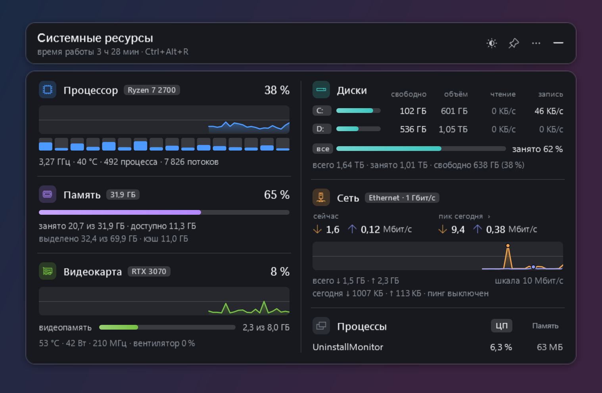
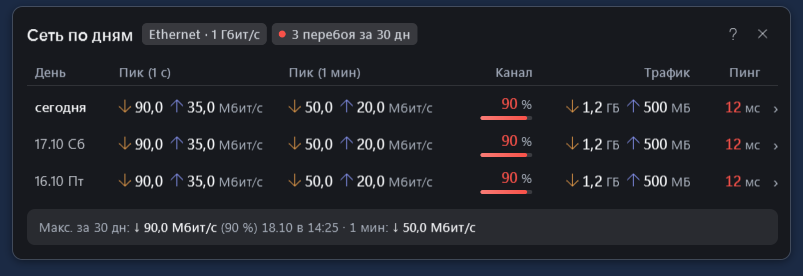
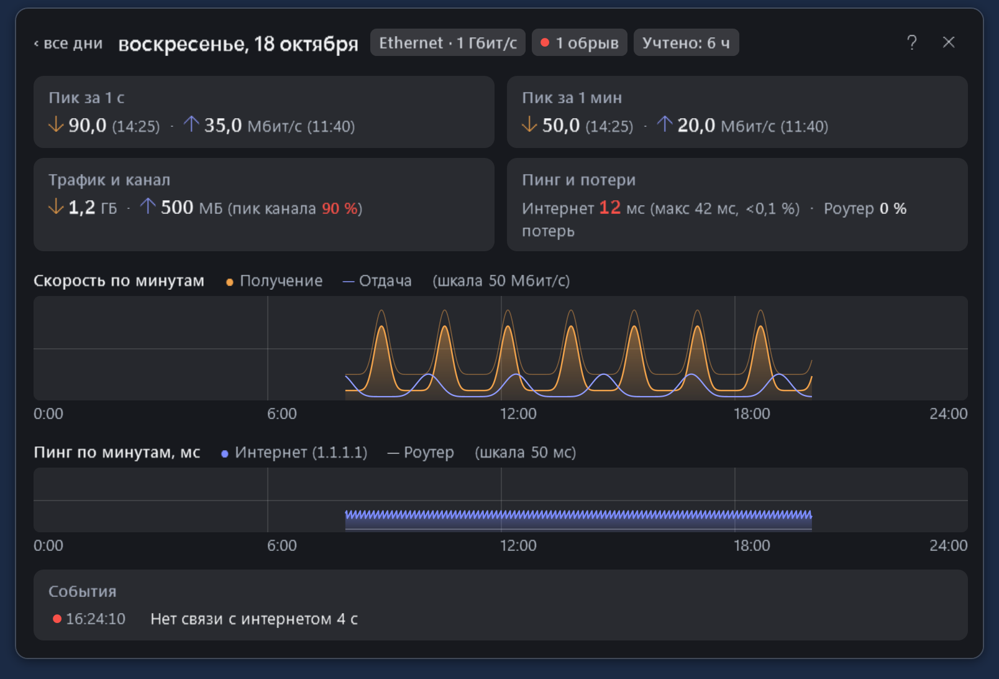
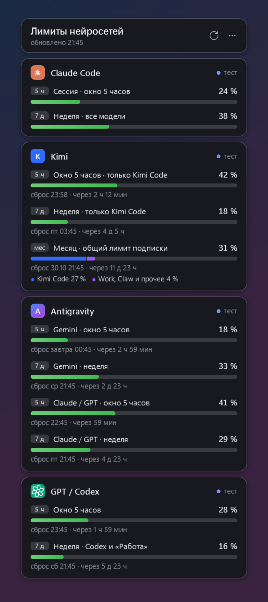

Процессор и память
Общая загрузка и каждый логический процессор, график, частота, температура при доступном датчике. Занятая и доступная память, выделенная память и кэш.
Что нагружает процессор? Куда ушла память? Когда просел интернет? «Системные ресурсы» показывают состояние компьютера и сохраняют историю сети. «Лимиты нейросетей» держат рядом запас подписок и время сброса.
Windows 10/11 x64 · .NET Framework 4.8 · интерфейс на русском

Для рабочего компьютера, домашнего ПК и поиска узких мест на старой машине. Карточка открывается щелчком по трею или сочетанием Ctrl+Alt+R. Можно закрепить её поверх окон, изменить масштаб и свернуть обратно.
Общая загрузка и каждый логический процессор, график, частота, температура при доступном датчике. Занятая и доступная память, выделенная память и кэш.
Загрузка и видеопамять, доступные температура, частота, мощность и вентилятор. Занятое и свободное место, чтение и запись по дискам, общий итог.
Самые нагруженные процессы по процессору или памяти. Одинаковые процессы объединены. Значок в трее показывает загрузку процессора, памяти и видеокарты.
Нагрузка зависит от конфигурации ПК и включённых датчиков. Совместимость со всем оборудованием и малое потребление на любой старой машине не заявляются.
Щелчок по пикам в карточке открывает журнал. Отдельно видны короткий всплеск и устойчивая нагрузка, объём трафика и события связи. По любому дню можно открыть подробности.
Максимум за интервал около секунды и наибольшая средняя за минуту, со временем. Процент от указанного тарифа или скорости соединения адаптера.
Два графика задержки помогают сравнить локальную сеть с внешним узлом. События отмечают неответы, высокий пинг, отключение адаптера и смену скорости соединения.
Трафик по дням, поминутные графики, время наблюдения и журнал событий. Локальные файлы истории хранятся до 400 дней.


Учёт этого ПК, пока виджет работает. Трафик включает локальную сеть. Неответ на пинг — признак для диагностики, а не установленная причина сбоя. Подробнее об измерениях ↓
Самостоятельный виджет для Claude Code, Kimi Code, Antigravity и GPT / Codex. Окна лимитов, время сброса, доступные кредиты и дополнительный расход собраны в одной карточке.
Все источники изначально выключены. Для нужного сервиса требуется совместимое установленное приложение или интерфейс командной строки (CLI), штатный вход и включение источника в настройках. Как подключаются источники ↗

Публичная альфа v0.1.1. Готовые приложения для Windows 10/11 x64 с .NET Framework 4.8. Для обычного запуска сборка из исходников не нужна.
Установщик 1.1.1: карточка ресурсов, сетевой журнал, ярлыки и штатное удаление. Автозапуск и локальный датчик температуры — по вашему выбору. Для установки датчика Windows запросит подтверждение администратора; основной виджет работает с обычными правами.
Скачать установщик .exe ↓Или ZIP без установки ↓Установка принимает отдельную пустую папку или подтверждённую прежнюю установку. При удалении настройки и журнал сети сохраняются.
Архив 1.0.0: распакуйте в доступную для записи папку и откройте LimitsWidget.exe. Затем подключите только нужные источники.
Скачать ZIP ↓Запросов к провайдерам до включения источников нет. Автозапуск включается через меню.
Физические сетевые интерфейсы этого компьютера, включая обмен внутри локальной сети, пока работает виджет. Это не счётчик всего домашнего интернета. Минутный пик — максимум скользящей средней примерно за 60 секунд; краткий пик зависит от интервала опроса. Процент канала считается от заданного тарифа или скорости адаптера, а не от измеренной доступной скорости интернета.
Сравнение ответов роутера и внешнего узла помогает сузить область поиска. По умолчанию внешний узел — 1.1.1.1. Пинг использует ICMP: ответы могут ограничиваться или блокироваться. События показывают наблюдение и вероятное направление диагностики, но не доказывают неисправность провайдера, кабеля или роутера.
Большинство показателей читаются через Windows и драйвер видеокарты. Для температуры процессора установщик предлагает локальный помощник с обычным подтверждением администратора. Его можно добавить и позже через меню виджета. Он передаёт только показания процессора через защищённый файл на этом ПК, без сетевого порта или веб-сервера. Показания старше пяти секунд не используются. Сохранены и внешние источники HWiNFO, AIDA64, Core Temp и LibreHardwareMonitor; без доступного датчика показан прочерк. Старые машины — полезный сценарий поиска узких мест, но нагрузку и доступность датчиков нужно проверять на конкретном ПК. AMD и Intel пока не прошли отдельную проверку на реальном оборудовании. Как устроен локальный датчик ↗
Настройки и история сохраняются рядом с приложением. «Ресурсы» проверяют внешний узел пингом. Собственный температурный помощник не открывает сетевых соединений; данные читаются из защищённого локального файла. Отдельно можно использовать уже настроенный внешний LibreHardwareMonitor через его локальный адрес. «Лимиты» обращаются к выбранным источникам только после их включения, используя установленные приложения и их авторизацию. Этот сайт не опрашивает аккаунты, не использует аналитику и внешние шрифты.
Да. TrafficMonitor, GlassWire, NetWorx, HWiNFO, Rainmeter и PingPlotter перекрывают разные части задач. Здесь акцент на готовой компактной карточке и связанном дневнике сети. Сравнение по официальной документации.
Для них планируются отдельные реализации. Сейчас доступны только приложения Windows; сроков и загрузок для других систем нет.